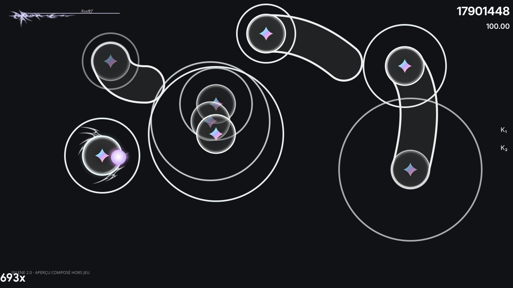
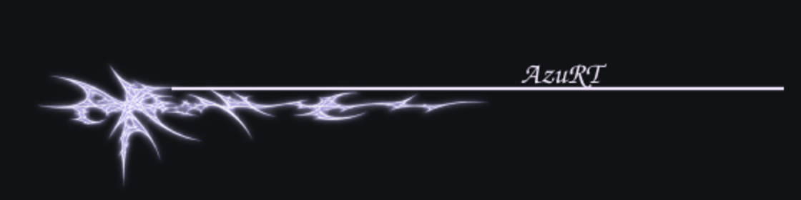
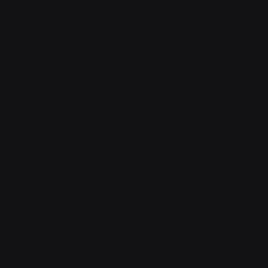
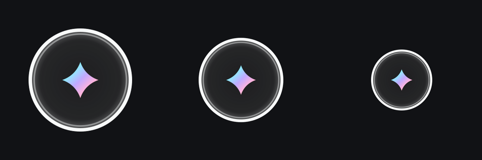
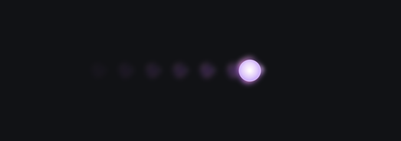

Téléchargez.
Un seul fichier .osk complet.
Aucune ancienne version requise.
Des prismes dans la nuit.
Un halo nacré. Des ailes qui suivent le rythme.

LES REPÈRES
Des cercles blancs à fond sombre entourent des prismes légèrement agrandis, nuancés de cyan, lavande, rose et or.
PRISMEPRISMEPRISMEFaites glisser la lumière.Traînée de démonstration dans le navigateur.
LE MOUVEMENT
Une petite boule nacrée et lumineuse suit la souris avec une traînée diffuse.
Télécharger la V2.0 ↘Traînée courte par défaut : points natifs, fondu de 150 ms dans lazer. La traînée violette d’origine prolonge la lumière pendant les déplacements.
LA SIGNATURE
Un motif fin et lumineux ouvre la ligne de vie lavande. La signature AzuRT adopte une écriture calligraphique, effilée comme le logo.
LES PETITS DÉTAILS
Combo blanc en Google Sans, réduit de 20 %, avec rebond à chaque incrément. Pour les 100 et les 50, un petit :3 élastique apparaît puis s’efface.

LES SONS
Court, net, sans longue réverbération.
Écoutez les trois familles de hitsounds.
À vous de lancer le premier clic.
SELENE 2.0




Aperçus composés avec les ressources du skin. L’animation est une simulation hors jeu. Le fond et les objets joués dépendent de la beatmap.
INSTALLER
Un seul fichier .osk complet.
Aucune ancienne version requise.
Glissez le fichier dans osu!,
ou ouvrez-le par double-clic.
Sélectionnez « SELENE V2.0 »
dans les options de skin.
LÀ OÙ TOUT A COMMENCÉ
La première version. Nacre, rose poudré et lavande.
Gardée ici, pour le plaisir de revenir au début.
 Télécharger l’originale ↘
Télécharger l’originale ↘Skin au format legacy pour osu!stable et osu!lazer. Les menus ciblent surtout stable et le HUD personnalisé concerne lazer. La cadence des images de la balle de slider est liée à sa vitesse dans lazer.
Les archives, les PNG SD et HD, les sons, les liens et les animations ont été contrôlés techniquement. L’import et le gameplay restent à confirmer dans un client osu!. Ajustez la taille du curseur dans vos options de jeu.
Lire le guide ↗